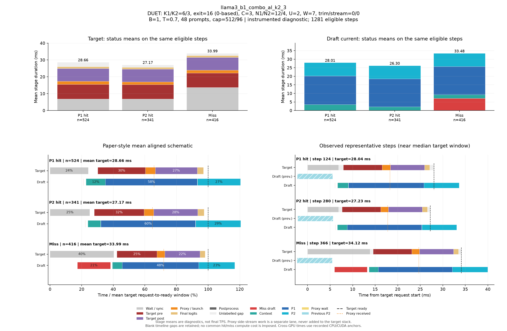

DUET: K1/K2=6/3, exit=16 (0-based), C=3, N1/N2=12/4, U=2, W=7, trim/stream=0/0
| Pass | 용도 | N | B | T | Seed | AL* | Cache hit | TPS* | Raw TPS |
|---|---|---|---|---|---|---|---|---|---|
| 0 | profile-diagnostic | 48 | 1 | 0.7 | 5100 | 2.816 | 67.50% | 77.19 | 76.99 |
Input/output cap: 512/96 · GPUs: 4,5 · draft seed: 0 · source: 69192a52972dc5f39cc698da4c6e01b55fd894b5
PNG · 벡터 PDF · 원본 결과 JSON
세부 trace: 1281 eligible steps. Target 원본 · Draft 원본
제외 수: {"initial": 19, "output_boundary": 45, "capture_or_next": 15}
왼쪽 아래는 상태별 평균 정렬 schematic, 오른쪽 아래는 실제 대표 step입니다. %의 분모는 각 상태의 평균 target request→ready 시간이며 phase overlap은 별도 lane에 표시합니다.

{
"args": {
"target": "/data/chokwans99/models/layerskip-llama3-8B",
"draft": "/home/chokwans99/models_mlsys/Qwama-0.5B-Instruct",
"mode": "duet-tree",
"batches": [
1
],
"temperatures": [
0.7
],
"seeds": [
5100
],
"target_tp": 1,
"prompts": "/home/chokwans99/PSD-mlsys-coverage/results/mlsys_coverage/round5/tuning48.json",
"limit": 0,
"max_new_tokens": 96,
"max_model_len": 2048,
"input_cap": 512,
"k1": 6,
"k2": 3,
"draft_fan_out": 2,
"proxy_fan_out": 1,
"p1_tree": true,
"p1_verify_nodes": null,
"p2_verify_nodes": null,
"exit_layer": 16,
"p1_nodes": 12,
"p2_nodes": 4,
"tree_width": 3,
"p1_roots": 2,
"p2_budget": null,
"tree_root_count": null,
"tree_beta": 0.5,
"tree_proxy_threshold": 0.01,
"tree_conf_threshold": 0.03,
"root_source": "complement",
"root_normalization": "full",
"root_overlap_mix": 0.25,
"memory_fraction": 0.45,
"ignore_eos": false,
"greedy_only": false,
"audit_preemption": false,
"ragged_limits": false,
"tree_calibration_dir": null,
"preflight_test": null,
"output": "/home/chokwans99/PSD-mlsys-coverage/results/mlsys_coverage/round5/llama3_b1_combo/llama3_b1_combo_al_k2_3.json"
},
"engine_kwargs": {
"num_gpus": 2,
"max_num_seqs": 1,
"max_model_len": 2048,
"max_num_batched_tokens": 2048,
"gpu_memory_utilization": 0.45,
"speculate": true,
"draft_async": true,
"greedy_only": false,
"jit_speculate": true,
"speculate_k": 9,
"async_fan_out": 3,
"duet_p1_tree_policy": "on",
"duet_p2_tree_policy": "on",
"draft": "/home/chokwans99/models_mlsys/Qwama-0.5B-Instruct",
"duet_enabled": true,
"duet_exit_layer": 16,
"duet_phase1_k": 6,
"duet_phase2_k": 3,
"duet_draft_fan_out": 2,
"duet_p2_tree_max_nodes": 4,
"duet_p2_tree_verify_nodes": 4,
"duet_p1_tree_max_nodes": 12,
"duet_p1_tree_verify_nodes": 12,
"duet_tree_c_tensor": 3,
"duet_p1_roots_per_position": 2,
"duet_p2_budget": null,
"duet_tree_root_count": null,
"duet_tree_beta": 0.5,
"duet_tree_proxy_threshold": 0.01,
"duet_tree_conf_threshold": 0.03,
"duet_root_source": "complement",
"duet_root_normalization": "full",
"duet_root_overlap_mix": 0.25
},
"env": {
"CUDA_VISIBLE_DEVICES": "4,5",
"SSD_CUDA_ARCH": "8.9",
"SSD_ATTN_BACKEND": "auto",
"SSD_DIST_PORT": "31216",
"OMP_NUM_THREADS": "4",
"SSD_SEED": "0",
"SSD_CHAIN_PROXY_GRAPH": "1",
"SSD_FAST_VERIFY": "1",
"SSD_BATCHED_PROXY_GRAPH": "1",
"SSD_DUET_EXIT_REPLICA": "0",
"SSD_ASYNC_PROXY_SEND": "1",
"SSD_PROXY_STREAM": "0",
"SSD_BATCHED_TREE": "1",
"SSD_TREE_EXPANSION_POLICY": "reach_gain_frontier",
"SSD_TREE_REACH_CALIBRATION": "/home/chokwans99/PSD-mlsys-coverage/results/mlsys_coverage/round4/calibration/reach.json",
"SSD_TREE_GAIN_CALIBRATION": "/home/chokwans99/PSD-mlsys-coverage/results/mlsys_coverage/round4/calibration/gain.json",
"SSD_DUET_MISS_K": "4",
"SSD_TREE_FUSED_MATH": "1",
"SSD_BATCH_TREE_BULK_EXPORT": "1",
"SSD_TREE_PARALLEL_INSERT": "0",
"SSD_PROFILE_DUET": "1",
"SSD_PROFILE_DUET_MAX_EVENTS": "100000",
"SSD_TREE_SHAPE_METRICS": "1",
"SSD_PROFILE_DIR": "/home/chokwans99/PSD-mlsys-coverage/results/mlsys_coverage/round5/profiles/llama3_b1_combo_al_k2_3",
"SSD_HF_CACHE": "/data/chokwans99/models",
"SSD_DATASET_DIR": "/home/chokwans99/PSD-mlsys-coverage/results/mlsys_coverage/round5"
},
"effective_features": {
"fast_verify": true,
"batched_proxy_graph": true,
"exit_replica": false,
"jit_speculate": true,
"duet_jit_short": true,
"miss_depth": 4,
"miss_width": 1,
"tree_fused_math": true,
"tree_parallel_insert": false,
"bulk_export": true
},
"resolved_env": {
"SSD_CUDA_ARCH": "8.9",
"SSD_ATTN_BACKEND": "auto",
"SSD_DIST_PORT": "31216",
"SSD_SEED": "0",
"SSD_CHAIN_PROXY_GRAPH": "1",
"SSD_FAST_VERIFY": "1",
"SSD_BATCHED_PROXY_GRAPH": "1",
"SSD_DUET_EXIT_REPLICA": "0",
"SSD_ASYNC_PROXY_SEND": "1",
"SSD_PROXY_STREAM": "0",
"SSD_BATCHED_TREE": "1",
"SSD_TREE_EXPANSION_POLICY": "reach_gain_frontier",
"SSD_TREE_REACH_CALIBRATION": "/home/chokwans99/PSD-mlsys-coverage/results/mlsys_coverage/round4/calibration/reach.json",
"SSD_TREE_GAIN_CALIBRATION": "/home/chokwans99/PSD-mlsys-coverage/results/mlsys_coverage/round4/calibration/gain.json",
"SSD_DUET_MISS_K": "4",
"SSD_TREE_FUSED_MATH": "1",
"SSD_BATCH_TREE_BULK_EXPORT": "1",
"SSD_TREE_PARALLEL_INSERT": "0",
"SSD_PROFILE_DUET": "1",
"SSD_PROFILE_DUET_MAX_EVENTS": "100000",
"SSD_TREE_SHAPE_METRICS": "1",
"SSD_PROFILE_DIR": "/home/chokwans99/PSD-mlsys-coverage/results/mlsys_coverage/round5/profiles/llama3_b1_combo_al_k2_3",
"SSD_HF_CACHE": "/data/chokwans99/models",
"SSD_DATASET_DIR": "/home/chokwans99/PSD-mlsys-coverage/results/mlsys_coverage/round5",
"SSD_FORCE_SPLIT_K1K2": "1",
"SSD_DUET_JIT_SHORT": "1",
"SSD_SHM_NAME": "ssd_2712140"
},
"runtime_source_sha256": {
"ssd/ssd/__init__.py": "f1a221b38f55b42ef0619cba48a411acbbd1965c4845b4643f77443b7ce77950",
"ssd/ssd/config.py": "865ddb5e09ec11f4bc8511dad3f5abad39a6ab412cf0bbcd6213179b5245fa31",
"ssd/ssd/engine/block_manager.py": "05d873619b419d31f47b4be4025bc7c9f11759f5f0bc3f65fbff3a1e8f94660a",
"ssd/ssd/engine/draft_runner.py": "8cb7e22f725de2c0d9c85912ae04f88f1674f34c0cee4b5beccc9a3b5be1c174",
"ssd/ssd/engine/helpers/batch_tree_common.py": "739feeb975c20d0adbdae51735b8983aa6cae8b59d6237b285db0c766d558f27",
"ssd/ssd/engine/helpers/batch_tree_draft.py": "f361030685350183884cc55b9058945515bb00da53fc86541f7902bfd2138528",
"ssd/ssd/engine/helpers/batch_tree_forward.py": "0c6079d2bdbf7ecc000b2a98b94b49b1942939d34ada80b15f57510de8a20940",
"ssd/ssd/engine/helpers/batch_tree_inputs.py": "c0a05d13ba0e63ecbc920425ddd6a98dc60001d93d73085e75d2d4a9b110a066",
"ssd/ssd/engine/helpers/batch_tree_roots.py": "ad3c4e772392c1043284ac4912d606543f3fd76167135b73e4f72a700e6820c7",
"ssd/ssd/engine/helpers/batch_tree_sampling.py": "ac466b59a1dab2a34e8630db347a2c8d16de3e00a526b258537a82245fbb5006",
"ssd/ssd/engine/helpers/batch_tree_verify.py": "f1258a91f3aea07be44267602808a8075769ee2e1908dad67ff49f7b1bbe811b",
"ssd/ssd/engine/helpers/batched_proxy.py": "6ed4f9b85ff8cf9c24b7ad43a1b7377d08123eeef5307366a373dacda184da86",
"ssd/ssd/engine/helpers/batched_tree_executor.py": "098d64cad2d20d96091631f6bc91da73b1e893ec400c3431a4ed68d007a9ef45",
"ssd/ssd/engine/helpers/cudagraph_helpers.py": "0436aec61d05d0b79696a48665042e364f3f4c50d853b68dc424e435b54be0c9",
"ssd/ssd/engine/helpers/e0_trace.py": "23ecd9bce2587cbef3f99c8894964c0d9642d33d372bd7be4954a5a2840a142e",
"ssd/ssd/engine/helpers/mask_helpers.py": "8ada4e709a6ab310ee920a7176b3684f89860022fc659442f6cb02ed5fb87d88",
"ssd/ssd/engine/helpers/p1_tree.py": "f48ae6b01e593d2598262b34007a6b58dde9e57e94138dde62f81d5526637398",
"ssd/ssd/engine/helpers/p2_tree.py": "73b0a512d834ab3a4608d9cd898b13b32630dd3b914b49e753c1116ac0640b41",
"ssd/ssd/engine/helpers/p2_tree_executor.py": "cfb04f959fd08baf3819a688a907cac4e3071a2727085ea08ca089b50a21e82e",
"ssd/ssd/engine/helpers/packed_tree_forward.py": "b903d6fe4d1fe18f95f6540f488acf40d469154100239429256eace61b1d7e76",
"ssd/ssd/engine/helpers/packed_verify.py": "a50ff24e93324840783b60102bfaeb3786711f05f64bd897708c779535c1820f",
"ssd/ssd/engine/helpers/root_policy.py": "4fd5cc949ee7c63db08060046bea197a62299c31af0a90990294ce39cf13a66e",
"ssd/ssd/engine/helpers/runner_helpers.py": "bfb570d8e018ee296a6c2a8c3c9e75919fd0eb1beb288ceb80121ad116419bf2",
"ssd/ssd/engine/helpers/speculate_types.py": "2929b5f3a176d04b6a4b01f092b224ad733dfda10a647bb73801cd346441ae91",
"ssd/ssd/engine/helpers/tree_expansion_policy.py": "47f818d1b8f284e56813af294723f6a934c3da0502b9ae4e611b54ba6fb85dac",
"ssd/ssd/engine/helpers/tree_fused_math.py": "930a1215363a3b6f878cbc4a71c3f59293f46aa2eab3c4938e5bb51e95868d2e",
"ssd/ssd/engine/helpers/tree_gain_allocation.py": "6f32c6a7b69272c1b42992d95c546bfd3980ccd71af3b3346e9df61977907b6a",
"ssd/ssd/engine/helpers/tree_host_topology.py": "86d0deab4da2932540a108c4c2b3560b8634837e71ba23783375c2001e4cf81c",
"ssd/ssd/engine/helpers/tree_layout.py": "4e5e47c54a4efd5a30ae8c528e1d2d9493d12aa5605c0e65c2f86ba874805be1",
"ssd/ssd/engine/helpers/tree_rerank_gpu.py": "e4a8bff8828f983d6eb407504f87f2a9edf08a1750449fe46565e661f892b734",
"ssd/ssd/engine/helpers/tree_topology_gpu.py": "3a6cf8796faabbe8adef56deedf8956c1cf252a31e0491f3b71a8544bdcf89af",
"ssd/ssd/engine/llm_engine.py": "b0081876ef6470f91fa562acc0317074a85afa9aec8322182bda7749153db00f",
"ssd/ssd/engine/model_runner.py": "5fa9e910f38538c276a151113fc490be9c75ae9af2bf35ba6eaa5513b237a421",
"ssd/ssd/engine/scheduler.py": "52a36e8bb2abc26f775562a39bd95ea6cc8c70650e6193ddaa0fad762afb8ae4",
"ssd/ssd/engine/sequence.py": "6894715ef142074b118bfa3018b10826d2748518e9c8b71291064eb99fae9bd9",
"ssd/ssd/engine/speculator_async.py": "cd16395d5e5d7380d29f5a27e1495b6a40758c0452ce2cb40d996e2c3271c114",
"ssd/ssd/engine/speculator_sync.py": "30487afa7f5027735ebd752ca1a53003f1d56350f503ea91931ef64e7aab115e",
"ssd/ssd/engine/step.py": "525d3022561c9eee96ec076032bb27e281af744feb739ddc17e52344a9cafe8f",
"ssd/ssd/engine/verifier.py": "f6795547f278628312d2dd5ab0a28e9f34489b8e6d02038566a65fa3190a0928",
"ssd/ssd/layers/activation.py": "13d88b460e7610df28c6a7c719dd8bf21c5c59ae0f85c94d505d499215618a82",
"ssd/ssd/layers/attention.py": "bbafa69d9b52dedf81542f2c3227b7f061de11c679a6681a16b0c137ccfc672b",
"ssd/ssd/layers/embed_head.py": "b896a56b908d75c8f30462b0b1a4ce634276ddb41165fdaa0220c55a2ddf7257",
"ssd/ssd/layers/fi_attn.py": "4b0a275d020c1c3ce37f4e2a6c04bff12577d6f11feec7d79959652300fc9a0c",
"ssd/ssd/layers/layernorm.py": "a076c8d2e31d2597119d8504a69afd8711b41a29b5ccb7e1bf111a6c7277400e",
"ssd/ssd/layers/linear.py": "82c096262013516c5f0a43f7c28f23aa6db6b14f52cbe1ce1dacc5f9d5c4b0b6",
"ssd/ssd/layers/rotary_embedding.py": "1bcca21cf5e4d81c11a5c55d59a6033874c4e6a0003cc4ae8e1aa6165976a723",
"ssd/ssd/layers/sampler.py": "df22591a229ae5c2f62d4797707470ebccb8e55f7064577bc24a656ed797f213",
"ssd/ssd/llm.py": "496950f31428f674b70e8e137e029aa16dd82fdc8d8b8cc76f9ebdce86f7f653",
"ssd/ssd/models/eagle3_draft_llama3.py": "0d6e713a419cf884fc85984f9a2a6de520119032075a7c99158e0df7e2faca84",
"ssd/ssd/models/llama3.py": "ac801bd73e999f04a6fc862ca1d49bc94c88315456cfb6cb1215a503bcc5e07d",
"ssd/ssd/models/qwen2.py": "6804e3662a173368632e5f05b9893cc0cd28a61ac9bd25dbe8cd6f387ca0d1ca",
"ssd/ssd/models/qwen3.py": "535495bf69933fd9c677275453b801189e2c3c78a94fcc5133fc65b88c9f69c7",
"ssd/ssd/paths.py": "72c52420daaf6d457c60235617efc3f8b1e3ae208a35f3bc45438adc9d7e01ac",
"ssd/ssd/quant/__init__.py": "a69f0de0a516ba2bf9e13680b75b8f5d538c2eb281b095662ed1515f8b0f8698",
"ssd/ssd/quant/adapter.py": "fbb1ce4a198a585c31b0102555d1f84d18b09b0de1b90a5808d93ec8ff7ac271",
"ssd/ssd/quant/awq_calibrate.py": "116807eca0a3e4e001aa24a3344031416e4060a6c1b2e39f59829fba09484126",
"ssd/ssd/quant/build.py": "37f9c72ac69af213f2720c86faf380b8a46baaad0b98bf5f2e3c7fa9b3fbc43c",
"ssd/ssd/quant/config.py": "080c327b2297d0905f8fddc8d994aa7b9dc1086d7703d951471d48cea8723a1d",
"ssd/ssd/quant/importer.py": "c8990b69bc9e4e152e7e80b7f08f273c6a4652c1f7e95a8247f85e50030f4f92",
"ssd/ssd/quant/init_context.py": "6aa3dc3f6e95d8902fa7244d0010110b6fcf1ffdccedd6eaa389204339fc214f",
"ssd/ssd/quant/io.py": "f44f98a57351ff1063b7423d2f8390a565a30796fd6c3beaeaa8825f906e66b5",
"ssd/ssd/quant/loader.py": "14f901b1f53a3650be7eff497f626469e2b1fbc487202c639d33c8dd4c9047fb",
"ssd/ssd/quant/marlin.py": "4f1996e9f63d7109e92a3a7ec5350069ba67d7659f2149e99b84ca3c6626b241",
"ssd/ssd/quant/marlin_utils.py": "f64ec8d7ec8260556abd21e229567971a928882f14b93d288a6732d55c12fc90",
"ssd/ssd/quant/naming.py": "7ba73900af5e6d6fa2d1907bd2611625fc72f28a1fb9ea4834cd9a45901632d6",
"ssd/ssd/quant/pack.py": "b7dd683b7cdbfbb6f4ce1e13a51a72240a8dc3a35b7ed652dc664d26bb384711",
"ssd/ssd/quant/state.py": "82cb1050a3b1776765df7ad8f6c59c23a86ac8d1d4cc3c974cded7f8e762f806",
"ssd/ssd/sampling_params.py": "7f79868c4ca115bb18e017411a6c5545f354aa858aa0b8076aafb756d0785032",
"ssd/ssd/utils/async_helpers/async_spec_helpers.py": "0d70779098c5051fcba5d3add5ff0b7896139f1b7789babe701a8df6eaa40f24",
"ssd/ssd/utils/async_helpers/duet_policy.py": "1fb3e1ec1c41a9cda5f531f8c732b09145c7d87ea79d74c331b8176f11f22aaf",
"ssd/ssd/utils/async_helpers/nccl_pack.py": "6330e785f3e81acffe25a82061d3098f7834ad3c2d07bb071d79ed9923b18dc1",
"ssd/ssd/utils/async_helpers/tests.py": "6491ced36a2a6f06d8cf411204b1190d2ca0bc700cd0becf79c3f4cd8abcd87e",
"ssd/ssd/utils/context.py": "ce55eb45f00c91412946dd1c96f5c8f972372dd4c8069770c48e120773f301fc",
"ssd/ssd/utils/int8_debug.py": "9a71dbf2b997a9c8d9b776cc3659c8dbf32ce5411eb5cedb4a73368cee60d3d7",
"ssd/ssd/utils/loader.py": "c008eac34810772e8d9f51da896c00867481f3e1a0e6f725e0d06599c0aab59e",
"ssd/ssd/utils/misc.py": "1084b630f174d651b78b01c4ba2dff147f18d3cf52a200704b4b9eab2b72b66c",
"ssd/ssd/utils/quantize.py": "c0ee73d55f3781eba88007325d5e9e53e66ad952e0e8f19143aa8c50bc39f406",
"ssd/ssd/utils/verify.py": "0cf11b9ba19a73e9c39087fccde43071464c6f3b964e00081ebadc747ef142a4",
"ssd/ssd/utils/verify_fast.py": "23b05b7e5032fe72c8f2ef5bd7a69aa874818b08b52ea7fc0344a54c76ea28d9",
"ssd/bench/mlsys_campaign.py": "059b6316ba33e867e1fcf099a8180c186fa70b916692eca386d2a4a347b0f26f",
"ssd/bench/mlsys_coverage.py": "70b2afaf05bbbd5760c2a4f96f801976479209ca1d7a8f9eb8598139e686bdbc",
"ssd/bench/mlsys_greedy_audit.py": "b9815fd03ded7f30f7c0408629782156e73f5ceaab9f0b3b720956f5c00da141",
"ssd/bench/mlsys_preemption_audit.py": "f891ff5a69a59fb8c93e7952f9d48ac16adb7fef074763089f14d4505ecad80d",
"ssd/bench/mlsys_summarize.py": "0235aa2b56eb59c41c429351d77e90e16c52ccdf58c43e3578dd03df0f6095bd",
"ssd/bench/mlsys_tree_observer.py": "8c18248c9ef1953e2e821613099f14d155978540536939288d4fb2aa897c6263",
"ssd/bench/mlsys_verify_bench.py": "3ddc36197874d239f41a1c135570d4d7a0940d615d3d396299bae46e377bce2e"
}
}{
"groups": [
{
"status": "P1 hit",
"n": 524,
"mean_target_ms": 28.656055233860744,
"mean_decode_ms": 28.697512823491152,
"mean_intervals": [
{
"lane": "Draft current",
"label": "Context",
"start": 6.524672395855416,
"end": 10.011358348467878
},
{
"lane": "Draft current",
"label": "Miss draft",
"start": 5.987626380592812,
"end": 6.028245074603394
},
{
"lane": "Draft current",
"label": "P1",
"start": 10.033906887050803,
"end": 26.702378797622128
},
{
"lane": "Draft current",
"label": "P2",
"start": 26.707729430599066,
"end": 34.51816819187339
},
{
"lane": "Draft current",
"label": "Proxy wait",
"start": 26.704156745936125,
"end": 26.705940291626764
},
{
"lane": "Target",
"label": "Final logits",
"start": 26.67512708037864,
"end": 27.796658809858425
},
{
"lane": "Target",
"label": "Postprocess",
"start": 28.637463273437877,
"end": 28.656055233860744
},
{
"lane": "Target",
"label": "Proxy / launch",
"start": 17.2848860175555,
"end": 19.069608013593513
},
{
"lane": "Target",
"label": "Target post",
"start": 19.071690663581585,
"end": 26.67314694537461
},
{
"lane": "Target",
"label": "Target pre",
"start": 8.644613240511363,
"end": 17.282930087497217
},
{
"lane": "Target",
"label": "Wait / sync",
"start": 0.0,
"end": 6.903200086746507
}
],
"components": [
{
"lane": "Draft current",
"label": "Context",
"mean_ms": 3.486685952612462,
"present_steps": 524,
"population": 524
},
{
"lane": "Draft current",
"label": "Miss draft",
"mean_ms": 0.04061869401058168,
"present_steps": 524,
"population": 524
},
{
"lane": "Draft current",
"label": "P1",
"mean_ms": 16.668471910571323,
"present_steps": 524,
"population": 524
},
{
"lane": "Draft current",
"label": "P2",
"mean_ms": 7.810438761274323,
"present_steps": 524,
"population": 524
},
{
"lane": "Draft current",
"label": "Proxy wait",
"mean_ms": 0.0017835456906384185,
"present_steps": 524,
"population": 524
},
{
"lane": "Target",
"label": "Final logits",
"mean_ms": 1.1215317294797824,
"present_steps": 524,
"population": 524
},
{
"lane": "Target",
"label": "Postprocess",
"mean_ms": 0.018591960422865306,
"present_steps": 524,
"population": 524
},
{
"lane": "Target",
"label": "Proxy / launch",
"mean_ms": 1.7847219960380147,
"present_steps": 524,
"population": 524
},
{
"lane": "Target",
"label": "Target post",
"mean_ms": 7.601456281793027,
"present_steps": 524,
"population": 524
},
{
"lane": "Target",
"label": "Target pre",
"mean_ms": 8.638316846985854,
"present_steps": 524,
"population": 524
},
{
"lane": "Target",
"label": "Unlabelled gap",
"mean_ms": 2.5882363323946946,
"present_steps": 524,
"population": 524
},
{
"lane": "Target",
"label": "Wait / sync",
"mean_ms": 6.903200086746507,
"present_steps": 524,
"population": 524
}
],
"mean_markers": {
"Final logits": 27.796658809858425,
"Target ready": 28.656055233860744,
"Proxy received": 18.86025394328678
},
"representative": {
"step_id": 124,
"status": "P1 hit",
"target_ms": 28.04199194908142,
"decode_ms": 28.083730023354292,
"source_counts": {
"1": 1
},
"physical_queries": 13,
"max_valid_nodes": 12,
"unlabelled_target_ms": 1.9892578125,
"intervals": [
{
"label": "Wait / sync",
"start": 0.0,
"end": 6.884764909744263,
"lane": "Target",
"original_label": "target_spec_wait"
},
{
"label": "Target pre",
"start": 7.934570074081421,
"end": 16.56738305091858,
"lane": "Target",
"original_label": "batch_target_pre"
},
{
"label": "Proxy / launch",
"start": 16.5693359375,
"end": 18.36328101158142,
"lane": "Target",
"original_label": "batch_target_proxy"
},
{
"label": "Target post",
"start": 18.365233898162842,
"end": 25.96582007408142,
"lane": "Target",
"original_label": "batch_target_post"
},
{
"label": "Final logits",
"start": 25.967772960662842,
"end": 27.089843034744263,
"lane": "Target",
"original_label": "batch_target_final_logits"
},
{
"label": "Postprocess",
"start": 28.023437023162842,
"end": 28.04199194908142,
"lane": "Target",
"original_label": "target_postprocess"
},
{
"label": "Unlabelled gap",
"start": 6.884764909744263,
"end": 7.934570074081421,
"lane": "Target",
"original_label": "derived_gap"
},
{
"label": "Unlabelled gap",
"start": 16.56738305091858,
"end": 16.5693359375,
"lane": "Target",
"original_label": "derived_gap"
},
{
"label": "Unlabelled gap",
"start": 18.36328101158142,
"end": 18.365233898162842,
"lane": "Target",
"original_label": "derived_gap"
},
{
"label": "Unlabelled gap",
"start": 25.96582007408142,
"end": 25.967772960662842,
"lane": "Target",
"original_label": "derived_gap"
},
{
"label": "Unlabelled gap",
"start": 27.089843034744263,
"end": 28.023437023162842,
"lane": "Target",
"original_label": "derived_gap"
},
{
"label": "Miss draft",
"start": 6.055418968200684,
"end": 6.104247093200684,
"lane": "Draft current",
"original_label": "batch_miss_draft"
},
{
"label": "Context",
"start": 6.624754905700684,
"end": 9.027098894119263,
"lane": "Draft current",
"original_label": "batch_glue"
},
{
"label": "P1",
"start": 9.050535917282104,
"end": 25.797605991363525,
"lane": "Draft current",
"original_label": "batch_p1_total"
},
{
"label": "Proxy wait",
"start": 25.798583030700684,
"end": 25.800535917282104,
"lane": "Draft current",
"original_label": "batch_proxy_wait"
},
{
"label": "P2",
"start": 25.802489042282104,
"end": 33.61889600753784,
"lane": "Draft current",
"original_label": "batch_p2_total"
}
],
"previous": [
{
"label": "Previous P2",
"start": -2.2795419692993164,
"end": 5.5368640422821045,
"lane": "Draft previous",
"original_label": "batch_p2_total"
}
],
"markers": {
"Target ready": 28.04199194908142,
"Final logits": 27.089843034744263,
"Proxy received": 18.276122093200684
}
},
"step_ids": [
23,
24,
25,
27,
29,
31,
33,
34,
37,
39,
46,
48,
49,
51,
52,
57,
63,
66,
67,
68,
69,
73,
79,
80,
83,
87,
88,
90,
93,
94,
96,
98,
100,
104,
105,
113,
116,
117,
118,
119,
120,
121,
122,
123,
124,
125,
129,
141,
143,
144,
148,
151,
158,
160,
162,
163,
165,
166,
167,
168,
171,
172,
173,
174,
175,
176,
180,
184,
185,
192,
196,
204,
208,
213,
215,
220,
221,
222,
223,
225,
226,
227,
229,
230,
231,
237,
239,
240,
246,
248,
249,
250,
252,
254,
256,
257,
258,
260,
265,
275,
277,
279,
281,
283,
288,
291,
293,
296,
300,
301,
302,
307,
309,
311,
312,
314,
322,
326,
327,
328,
330,
333,
335,
339,
341,
343,
346,
348,
349,
350,
353,
355,
356,
357,
358,
359,
363,
364,
365,
367,
369,
370,
376,
381,
383,
384,
385,
387,
388,
389,
393,
398,
400,
403,
404,
405,
406,
408,
410,
412,
416,
417,
418,
422,
423,
424,
425,
426,
428,
431,
436,
437,
438,
441,
443,
445,
446,
448,
450,
451,
455,
456,
458,
461,
463,
464,
467,
469,
470,
471,
472,
474,
475,
485,
486,
487,
489,
494,
497,
499,
500,
501,
502,
504,
507,
515,
520,
521,
522,
523,
524,
525,
526,
536,
540,
545,
547,
548,
549,
558,
559,
560,
562,
570,
572,
573,
575,
576,
579,
586,
590,
599,
601,
607,
609,
613,
615,
620,
622,
628,
633,
637,
638,
639,
643,
648,
649,
650,
653,
658,
659,
662,
666,
668,
669,
672,
676,
681,
682,
683,
688,
696,
697,
700,
701,
702,
703,
704,
707,
714,
715,
717,
720,
724,
726,
730,
732,
733,
735,
739,
742,
744,
746,
747,
756,
759,
763,
767,
768,
769,
770,
774,
775,
776,
777,
778,
781,
782,
785,
788,
789,
793,
796,
798,
800,
801,
802,
803,
805,
809,
812,
813,
817,
818,
819,
820,
822,
827,
830,
831,
834,
839,
841,
842,
845,
849,
853,
854,
856,
870,
874,
875,
876,
877,
878,
884,
887,
888,
889,
908,
909,
912,
914,
915,
920,
921,
922,
925,
926,
934,
949,
952,
954,
956,
957,
958,
959,
961,
963,
970,
972,
973,
974,
977,
984,
985,
987,
991,
992,
998,
999,
1000,
1001,
1002,
1004,
1005,
1007,
1008,
1009,
1010,
1011,
1012,
1019,
1023,
1025,
1028,
1031,
1033,
1034,
1036,
1038,
1039,
1040,
1042,
1045,
1046,
1047,
1051,
1062,
1068,
1071,
1072,
1073,
1075,
1077,
1078,
1079,
1083,
1084,
1085,
1086,
1087,
1088,
1089,
1093,
1097,
1098,
1099,
1101,
1102,
1103,
1104,
1105,
1109,
1112,
1113,
1114,
1115,
1125,
1127,
1129,
1134,
1135,
1137,
1142,
1144,
1149,
1151,
1162,
1167,
1170,
1173,
1177,
1179,
1182,
1183,
1185,
1189,
1191,
1192,
1198,
1202,
1219,
1222,
1225,
1228,
1230,
1232,
1235,
1236,
1239,
1240,
1243,
1246,
1247,
1250,
1251,
1253,
1257,
1258,
1259,
1260,
1261,
1262,
1265,
1269,
1273,
1276,
1277,
1278,
1279,
1280,
1282,
1283,
1289,
1290,
1293,
1294,
1295,
1296,
1297,
1298,
1301,
1302,
1304,
1307,
1308,
1310,
1311,
1314,
1319,
1320,
1321,
1325,
1327,
1328,
1329,
1330,
1331,
1332,
1333,
1334,
1335,
1338,
1339,
1340,
1341,
1342,
1344,
1355,
1356,
1357,
1358,
1359
],
"query_shapes": {
"13": 494,
"4": 24,
"7": 6
}
},
{
"status": "P2 hit",
"n": 341,
"mean_target_ms": 27.16673728098268,
"mean_decode_ms": 27.208679545495954,
"mean_intervals": [
{
"lane": "Draft current",
"label": "Context",
"start": 6.480484508698987,
"end": 8.685276229360586
},
{
"lane": "Draft current",
"label": "Miss draft",
"start": 6.030561242984537,
"end": 6.070992638288705
},
{
"lane": "Draft current",
"label": "P1",
"start": 8.707828812585198,
"end": 24.99782205257248
},
{
"lane": "Draft current",
"label": "P2",
"start": 25.00313444501144,
"end": 32.76327812077363
},
{
"lane": "Draft current",
"label": "Proxy wait",
"start": 24.999520310908117,
"end": 25.001315930721695
},
{
"lane": "Target",
"label": "Final logits",
"start": 25.356748848716535,
"end": 26.470133232580952
},
{
"lane": "Target",
"label": "Postprocess",
"start": 27.14816827438444,
"end": 27.16673728098268
},
{
"lane": "Target",
"label": "Proxy / launch",
"start": 16.13789432349443,
"end": 17.81461201804824
},
{
"lane": "Target",
"label": "Target post",
"start": 17.81658233925045,
"end": 25.354646784818765
},
{
"lane": "Target",
"label": "Target pre",
"start": 7.575225367224461,
"end": 16.13583523716745
},
{
"lane": "Target",
"label": "Wait / sync",
"start": 0.0,
"end": 6.8146492567929355
}
],
"components": [
{
"lane": "Draft current",
"label": "Context",
"mean_ms": 2.2047917206615995,
"present_steps": 341,
"population": 341
},
{
"lane": "Draft current",
"label": "Miss draft",
"mean_ms": 0.040431395304168075,
"present_steps": 341,
"population": 341
},
{
"lane": "Draft current",
"label": "P1",
"mean_ms": 16.289993239987282,
"present_steps": 341,
"population": 341
},
{
"lane": "Draft current",
"label": "P2",
"mean_ms": 7.760143675762188,
"present_steps": 341,
"population": 341
},
{
"lane": "Draft current",
"label": "Proxy wait",
"mean_ms": 0.00179561981357787,
"present_steps": 341,
"population": 341
},
{
"lane": "Target",
"label": "Final logits",
"mean_ms": 1.1133843838644168,
"present_steps": 341,
"population": 341
},
{
"lane": "Target",
"label": "Postprocess",
"mean_ms": 0.01856900659824047,
"present_steps": 341,
"population": 341
},
{
"lane": "Target",
"label": "Proxy / launch",
"mean_ms": 1.6767176945538116,
"present_steps": 341,
"population": 341
},
{
"lane": "Target",
"label": "Target post",
"mean_ms": 7.5380644455683194,
"present_steps": 341,
"population": 341
},
{
"lane": "Target",
"label": "Target pre",
"mean_ms": 8.560609869942986,
"present_steps": 341,
"population": 341
},
{
"lane": "Target",
"label": "Unlabelled gap",
"mean_ms": 1.4447426236619698,
"present_steps": 341,
"population": 341
},
{
"lane": "Target",
"label": "Wait / sync",
"mean_ms": 6.8146492567929355,
"present_steps": 341,
"population": 341
}
],
"mean_markers": {
"Final logits": 26.470133232580952,
"Target ready": 27.16673728098268,
"Proxy received": 17.60805332276129
},
"representative": {
"step_id": 280,
"status": "P2 hit",
"target_ms": 27.228514909744263,
"decode_ms": 27.27226191200316,
"source_counts": {
"2": 1
},
"physical_queries": 7,
"max_valid_nodes": 4,
"unlabelled_target_ms": 1.4277353286743164,
"intervals": [
{
"label": "Wait / sync",
"start": 0.0,
"end": 6.861327886581421,
"lane": "Target",
"original_label": "target_spec_wait"
},
{
"label": "Target pre",
"start": 7.650389909744263,
"end": 16.228514909744263,
"lane": "Target",
"original_label": "batch_target_pre"
},
{
"label": "Proxy / launch",
"start": 16.23046898841858,
"end": 17.912108898162842,
"lane": "Target",
"original_label": "batch_target_proxy"
},
{
"label": "Target post",
"start": 17.914062023162842,
"end": 25.462889909744263,
"lane": "Target",
"original_label": "batch_target_post"
},
{
"label": "Final logits",
"start": 25.46484398841858,
"end": 26.578125,
"lane": "Target",
"original_label": "batch_target_final_logits"
},
{
"label": "Postprocess",
"start": 27.210937023162842,
"end": 27.228514909744263,
"lane": "Target",
"original_label": "target_postprocess"
},
{
"label": "Unlabelled gap",
"start": 6.861327886581421,
"end": 7.650389909744263,
"lane": "Target",
"original_label": "derived_gap"
},
{
"label": "Unlabelled gap",
"start": 16.228514909744263,
"end": 16.23046898841858,
"lane": "Target",
"original_label": "derived_gap"
},
{
"label": "Unlabelled gap",
"start": 17.912108898162842,
"end": 17.914062023162842,
"lane": "Target",
"original_label": "derived_gap"
},
{
"label": "Unlabelled gap",
"start": 25.462889909744263,
"end": 25.46484398841858,
"lane": "Target",
"original_label": "derived_gap"
},
{
"label": "Unlabelled gap",
"start": 26.578125,
"end": 27.210937023162842,
"lane": "Target",
"original_label": "derived_gap"
},
{
"label": "Miss draft",
"start": 6.147215843200684,
"end": 6.188231945037842,
"lane": "Draft current",
"original_label": "batch_miss_draft"
},
{
"label": "Context",
"start": 6.6218249797821045,
"end": 8.781981945037842,
"lane": "Draft current",
"original_label": "batch_glue"
},
{
"label": "P1",
"start": 8.805418968200684,
"end": 25.326902866363525,
"lane": "Draft current",
"original_label": "batch_p1_total"
},
{
"label": "Proxy wait",
"start": 25.328856945037842,
"end": 25.330809831619263,
"lane": "Draft current",
"original_label": "batch_proxy_wait"
},
{
"label": "P2",
"start": 25.332762956619263,
"end": 33.072996854782104,
"lane": "Draft current",
"original_label": "batch_p2_total"
}
],
"previous": [
{
"label": "Previous P2",
"start": -2.2160651683807373,
"end": 5.639402866363525,
"lane": "Draft previous",
"original_label": "batch_p2_total"
}
],
"markers": {
"Target ready": 27.228514909744263,
"Final logits": 26.578125,
"Proxy received": 17.795652866363525
}
},
"step_ids": [
20,
22,
32,
35,
36,
38,
40,
43,
44,
45,
54,
56,
59,
60,
77,
78,
81,
84,
85,
86,
91,
92,
108,
109,
110,
111,
128,
130,
132,
133,
134,
135,
137,
140,
145,
146,
147,
149,
150,
152,
153,
156,
157,
159,
161,
164,
179,
181,
182,
183,
191,
202,
206,
209,
210,
211,
212,
217,
224,
228,
241,
242,
247,
259,
264,
271,
272,
273,
278,
280,
287,
289,
295,
299,
306,
316,
317,
318,
324,
325,
329,
342,
347,
354,
360,
361,
362,
371,
374,
375,
377,
378,
379,
386,
395,
396,
402,
411,
414,
427,
429,
430,
432,
434,
435,
442,
444,
447,
454,
459,
460,
465,
466,
488,
493,
495,
496,
498,
511,
512,
513,
514,
516,
518,
519,
527,
532,
535,
539,
542,
543,
551,
552,
553,
555,
557,
561,
563,
565,
574,
580,
582,
583,
584,
588,
592,
593,
594,
596,
597,
602,
606,
612,
614,
617,
623,
625,
627,
629,
631,
636,
647,
651,
656,
664,
673,
680,
690,
691,
694,
695,
699,
711,
713,
716,
718,
723,
728,
729,
741,
743,
745,
748,
752,
755,
758,
762,
765,
766,
773,
790,
792,
794,
795,
799,
804,
807,
811,
816,
829,
832,
833,
836,
837,
840,
844,
846,
852,
858,
859,
867,
869,
871,
872,
873,
879,
880,
886,
890,
891,
893,
894,
900,
901,
902,
904,
907,
923,
924,
927,
931,
932,
933,
939,
940,
942,
946,
947,
948,
951,
953,
955,
960,
965,
966,
968,
969,
971,
980,
982,
988,
989,
990,
993,
994,
995,
996,
1003,
1017,
1018,
1020,
1022,
1024,
1026,
1035,
1052,
1054,
1056,
1060,
1063,
1065,
1066,
1067,
1074,
1076,
1080,
1082,
1094,
1106,
1107,
1117,
1118,
1119,
1126,
1128,
1130,
1131,
1136,
1139,
1140,
1147,
1148,
1150,
1154,
1155,
1159,
1163,
1164,
1175,
1184,
1187,
1190,
1193,
1199,
1200,
1205,
1206,
1207,
1208,
1210,
1211,
1213,
1215,
1217,
1218,
1224,
1227,
1234,
1242,
1244,
1245,
1249,
1252,
1254,
1256,
1268,
1271,
1272,
1274,
1275,
1281,
1284,
1287,
1300,
1313,
1317,
1322,
1326,
1346,
1353,
1354
],
"query_shapes": {
"7": 296,
"4": 45
}
},
{
"status": "Miss",
"n": 416,
"mean_target_ms": 33.986037044571,
"mean_decode_ms": 34.031074132564335,
"mean_intervals": [
{
"lane": "Draft current",
"label": "Context",
"start": 13.373859588916485,
"end": 15.48757745955999
},
{
"lane": "Draft current",
"label": "Miss draft",
"start": 5.844325619248243,
"end": 12.99293447457827
},
{
"lane": "Draft current",
"label": "P1",
"start": 15.490115125018816,
"end": 31.945024214684963
},
{
"lane": "Draft current",
"label": "P2",
"start": 31.95036949045383,
"end": 39.71085814329294
},
{
"lane": "Draft current",
"label": "Proxy wait",
"start": 31.94675199687481,
"end": 31.948566616727756
},
{
"lane": "Target",
"label": "Final logits",
"start": 32.232100274700386,
"end": 33.34621956027471
},
{
"lane": "Target",
"label": "Postprocess",
"start": 33.967456516738125,
"end": 33.986037044571
},
{
"lane": "Target",
"label": "Proxy / launch",
"start": 22.972297086738624,
"end": 24.65758222513474
},
{
"lane": "Target",
"label": "Target post",
"start": 24.6594954219002,
"end": 32.230053266080525
},
{
"lane": "Target",
"label": "Target pre",
"start": 14.374015222948332,
"end": 22.970157314378483
},
{
"lane": "Target",
"label": "Wait / sync",
"start": 0.0,
"end": 13.691988429771019
}
],
"components": [
{
"lane": "Draft current",
"label": "Context",
"mean_ms": 2.1137178706435056,
"present_steps": 416,
"population": 416
},
{
"lane": "Draft current",
"label": "Miss draft",
"mean_ms": 7.148608855330027,
"present_steps": 416,
"population": 416
},
{
"lane": "Draft current",
"label": "P1",
"mean_ms": 16.454909089666145,
"present_steps": 416,
"population": 416
},
{
"lane": "Draft current",
"label": "P2",
"mean_ms": 7.76048865283911,
"present_steps": 416,
"population": 416
},
{
"lane": "Draft current",
"label": "Proxy wait",
"mean_ms": 0.0018146198529463548,
"present_steps": 416,
"population": 416
},
{
"lane": "Target",
"label": "Final logits",
"mean_ms": 1.114119285574326,
"present_steps": 416,
"population": 416
},
{
"lane": "Target",
"label": "Postprocess",
"mean_ms": 0.018580527832874887,
"present_steps": 416,
"population": 416
},
{
"lane": "Target",
"label": "Proxy / launch",
"mean_ms": 1.6852851383961165,
"present_steps": 416,
"population": 416
},
{
"lane": "Target",
"label": "Target post",
"mean_ms": 7.570557844180327,
"present_steps": 416,
"population": 416
},
{
"lane": "Target",
"label": "Target pre",
"mean_ms": 8.596142091430151,
"present_steps": 416,
"population": 416
},
{
"lane": "Target",
"label": "Unlabelled gap",
"mean_ms": 1.3093637273861811,
"present_steps": 416,
"population": 416
},
{
"lane": "Target",
"label": "Wait / sync",
"mean_ms": 13.691988429771019,
"present_steps": 416,
"population": 416
}
],
"mean_markers": {
"Final logits": 33.34621956027471,
"Target ready": 33.986037044571,
"Proxy received": 24.446482030244972
},
"representative": {
"step_id": 366,
"status": "Miss",
"target_ms": 34.12304711341858,
"decode_ms": 34.16361985728145,
"source_counts": {
"0": 1
},
"physical_queries": 7,
"max_valid_nodes": 4,
"unlabelled_target_ms": 1.3203120231628418,
"intervals": [
{
"label": "Wait / sync",
"start": 0.0,
"end": 13.865235090255737,
"lane": "Target",
"original_label": "target_spec_wait"
},
{
"label": "Target pre",
"start": 14.556641101837158,
"end": 23.134766101837158,
"lane": "Target",
"original_label": "batch_target_pre"
},
{
"label": "Proxy / launch",
"start": 23.13671898841858,
"end": 24.820312976837158,
"lane": "Target",
"original_label": "batch_target_proxy"
},
{
"label": "Target post",
"start": 24.822266101837158,
"end": 32.36523509025574,
"lane": "Target",
"original_label": "batch_target_post"
},
{
"label": "Final logits",
"start": 32.36718797683716,
"end": 33.48046898841858,
"lane": "Target",
"original_label": "batch_target_final_logits"
},
{
"label": "Postprocess",
"start": 34.10351610183716,
"end": 34.12304711341858,
"lane": "Target",
"original_label": "target_postprocess"
},
{
"label": "Unlabelled gap",
"start": 13.865235090255737,
"end": 14.556641101837158,
"lane": "Target",
"original_label": "derived_gap"
},
{
"label": "Unlabelled gap",
"start": 23.134766101837158,
"end": 23.13671898841858,
"lane": "Target",
"original_label": "derived_gap"
},
{
"label": "Unlabelled gap",
"start": 24.820312976837158,
"end": 24.822266101837158,
"lane": "Target",
"original_label": "derived_gap"
},
{
"label": "Unlabelled gap",
"start": 32.36523509025574,
"end": 32.36718797683716,
"lane": "Target",
"original_label": "derived_gap"
},
{
"label": "Unlabelled gap",
"start": 33.48046898841858,
"end": 34.10351610183716,
"lane": "Target",
"original_label": "derived_gap"
},
{
"label": "Miss draft",
"start": 5.983154058456421,
"end": 13.221435070037842,
"lane": "Draft current",
"original_label": "batch_miss_draft"
},
{
"label": "Context",
"start": 13.617918968200684,
"end": 15.692137956619263,
"lane": "Draft current",
"original_label": "batch_glue"
},
{
"label": "P1",
"start": 15.694091081619263,
"end": 32.12377905845642,
"lane": "Draft current",
"original_label": "batch_p1_total"
},
{
"label": "Proxy wait",
"start": 32.12573194503784,
"end": 32.12768507003784,
"lane": "Draft current",
"original_label": "batch_proxy_wait"
},
{
"label": "P2",
"start": 32.12963795661926,
"end": 39.95385694503784,
"lane": "Draft current",
"original_label": "batch_p2_total"
}
],
"previous": [
{
"label": "Previous P2",
"start": -2.333251953125,
"end": 5.465575933456421,
"lane": "Draft previous",
"original_label": "batch_p2_total"
}
],
"markers": {
"Target ready": 34.12304711341858,
"Final logits": 33.48046898841858,
"Proxy received": 24.68627905845642
}
},
"step_ids": [
21,
26,
28,
30,
42,
47,
50,
53,
55,
58,
61,
62,
64,
65,
70,
72,
74,
75,
76,
82,
89,
95,
97,
99,
101,
103,
106,
107,
112,
114,
115,
127,
131,
136,
138,
139,
142,
154,
155,
170,
177,
178,
188,
189,
190,
200,
201,
203,
205,
207,
214,
216,
218,
219,
232,
234,
235,
236,
238,
243,
244,
245,
251,
253,
255,
261,
262,
263,
267,
268,
269,
270,
274,
276,
282,
284,
285,
286,
290,
292,
294,
297,
298,
303,
305,
308,
310,
313,
315,
319,
320,
321,
323,
331,
332,
334,
336,
337,
338,
340,
345,
351,
352,
366,
368,
373,
380,
382,
391,
392,
394,
397,
399,
401,
407,
409,
413,
415,
419,
421,
433,
439,
440,
449,
453,
457,
462,
468,
473,
476,
477,
478,
479,
480,
481,
482,
483,
484,
491,
492,
503,
505,
506,
508,
509,
510,
517,
531,
537,
538,
541,
544,
546,
550,
554,
556,
564,
567,
568,
569,
571,
577,
578,
581,
585,
587,
589,
591,
595,
598,
600,
603,
605,
608,
616,
618,
619,
621,
624,
626,
630,
632,
634,
635,
640,
642,
646,
652,
654,
655,
657,
660,
661,
663,
665,
667,
670,
671,
674,
675,
678,
679,
684,
685,
686,
687,
689,
692,
693,
698,
705,
706,
708,
710,
712,
719,
721,
722,
725,
727,
731,
734,
736,
737,
738,
740,
750,
751,
753,
754,
757,
760,
761,
764,
771,
772,
779,
780,
783,
784,
787,
791,
797,
806,
808,
810,
814,
815,
821,
823,
825,
826,
828,
835,
838,
843,
847,
848,
850,
851,
855,
857,
863,
864,
865,
866,
868,
881,
882,
883,
885,
892,
895,
899,
903,
905,
906,
910,
911,
913,
916,
917,
918,
919,
928,
929,
930,
935,
937,
938,
941,
943,
944,
945,
950,
962,
964,
967,
975,
976,
979,
981,
983,
986,
997,
1006,
1014,
1015,
1016,
1021,
1027,
1029,
1030,
1032,
1037,
1041,
1043,
1044,
1049,
1050,
1053,
1055,
1057,
1058,
1059,
1061,
1064,
1069,
1070,
1081,
1090,
1092,
1095,
1096,
1100,
1108,
1110,
1111,
1116,
1121,
1123,
1124,
1132,
1133,
1138,
1141,
1143,
1145,
1146,
1152,
1153,
1156,
1158,
1160,
1161,
1165,
1166,
1168,
1169,
1171,
1172,
1174,
1176,
1178,
1180,
1181,
1186,
1188,
1194,
1195,
1197,
1201,
1203,
1204,
1209,
1212,
1214,
1216,
1220,
1221,
1223,
1226,
1229,
1231,
1233,
1238,
1241,
1248,
1255,
1264,
1266,
1267,
1270,
1285,
1286,
1288,
1292,
1299,
1303,
1305,
1306,
1309,
1312,
1316,
1318,
1323,
1324,
1337,
1343,
1345,
1347,
1348,
1349,
1350,
1351,
1352
],
"query_shapes": {
"7": 416
}
}
],
"excluded": {
"initial": 19,
"output_boundary": 45,
"capture_or_next": 15
},
"eligible_steps": 1281,
"trace_paths": [
"profiles/llama3_b1_combo_al_k2_3/duet_profile_target_rank0_030650.json",
"profiles/llama3_b1_combo_al_k2_3/duet_profile_draft_030650.json"
],
"labelled_capture_count": 8,
"max_target_stage_overlap_ms": 0.0,
"detail_labels_present": false
}